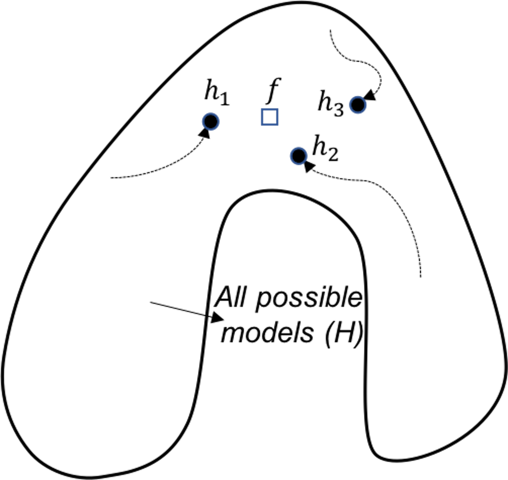
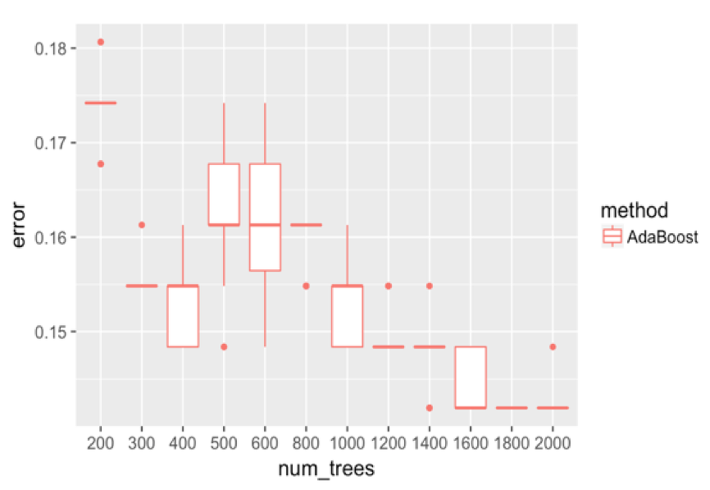
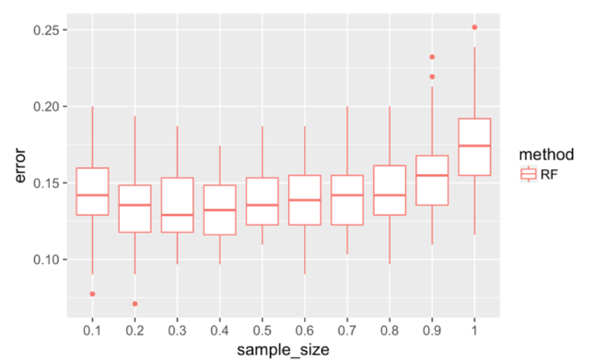

Ensemble learning
Rationale and formulation
Ensemble learning is another example of how we design better learning algorithms. The random forest model is a particular case of ensemble models. An ensemble model consists of \(K\) base models, denoted as, \(h_{1}, h_{2}, \ldots, h_{K}\). The algorithms to create ensemble models differ from each other in terms of the types of the base models, the way to create diversity in the base models, etc.
We have known the random forest model uses Bootstrap to create many datasets and builds a set of decision tree models. Some other ensemble learning methods, such as the AdaBoost model, also use decision tree as the base model. The two differ in the way to build a diverse set of base models. The framework of AdaBoost is illustrated in Figure 123. AdaBoost employs a sequential process to build its base models: it uses the original dataset (when the weights for the data points are equal) to build a decision tree; then it uses the decision tree to predict on the dataset, obtains the errors, and updates the weights of the data points188 I.e., those data points that are wrongly classified will gain higher weights.; then it builds another decision tree on the same dataset with the new weights, obtains the errors, and updates the weights of the data points again. The sequential process continues, until a given number of decision trees are built. This sequential process is designed for adaptability: later models focus more on the hard data points that present challenges for previous base models to achieve good prediction performance. Interested readers may find a formal presentation of the AdaBoost algorithm in the Remarks section.

Figure 123: A general framework of AdaBoost
The ensemble learning is flexible, given that any model could be a base model. And there are a variety of ways to resample or perturb a dataset to create a diverse set of base models. Like SVM, the ensemble learning is another approach to have a built-in mechanism to reduce the risk of overfitting. Here, we provide a discussion of this built-in mechanism using the framework proposed by Dietterich, where three perspectives (statistical, computational, and representational) were used to explain why ensemble methods could lead to robust performance. Each perspective is described in details below.
 Figure 124: Ensemble learning approximates the true model with a combination of good models (statistical perspective)
Figure 124: Ensemble learning approximates the true model with a combination of good models (statistical perspective)
Statistical perspective. The statistical reason is illustrated in Figure 124. \(\mathcal{H}\) is the model space where a learning algorithm searches for the best model guided by the training data. A model corresponds to a point in Figure 124, e.g., the point labelled as \(f\) is the true model. When the data is limited and the best models are multiple, the problem is a statistical one and we need to make an optimal decision despite the uncertainty. This is illustrated by the inner circle in Figure 124. By building an ensemble of multiple base models, e.g., the \(h_{1}, h_{2}, \text { and } h_{3}\) in Figure 124, the average of the models is a good approximation to the true model \(f\). This combined solution, comparing with other models that only identify one best model, has less variance, and therefore, could be more robust.
 Figure 125: Ensemble learning provides a robust coverage of the true model (computational perspective)
Computational perspective. A computational perspective is shown in Figure 125. This perspective concerns the way we build base models. Often greedy approaches such as the recursive splitting procedure are used to solve optimization problems in training machine learning models. This is optimal only in a local sense189 E.g., to grow a decision tree, at each node, the node is split according to the maximum information gain at this particular node. To grow a decision tree model, a sequence of splits is needed. Optimization of all the splits simultaneously leads to a global optimal solution, but it is a NP-hard problem that is not solved yet. Optimization of each split is more practical, only we know that the local optimal solution may result in suboptimal situations for further splitting of descendant nodes.. As a remedy to this problem, the ensemble learning initializes the learning algorithm (that is greedy and heuristic) from multiple locations in \(\mathcal{H}\), i.e., as shown in Figure 125, three models are identified by the same algorithm that starts from different initial points. Exploring multiple trajectories help us find a robust coverage of the true model \(f\).
 Figure 126: Ensemble learning approximates the true model with a combination of good models (representational perspective)
Figure 126: Ensemble learning approximates the true model with a combination of good models (representational perspective)
Representational perspective. Due to the size of the dataset or the limitations of a model, sometimes the model space \(\mathcal{H}\) does not cover the true model, i.e., in Figure 126 the true model is outside the region of \(\mathcal{H}\). This is not uncommon in real-world problems, for example, linear models cannot learn nonlinear patterns, or decision trees have difficulty in learning linear patterns. Using multiple base models may provide an approximation of the true model that is outside \(\mathcal{H}\), as shown in Figure 126.
Analysis of the decision tree, random forests, and AdaBoost
The three models are analyzed using the three perspectives. Results are shown in Table 31. In-depth discussions are provided in the following.
Single decision tree. A single decision tree lacks the capability to overcome overfitting in terms of each of the three perspectives. From the statistical perspective, a decision tree algorithm constructs each node using the maximum information gain at that particular node only; thus, random errors in data may mislead subsequent splits. On the other hand, when the training dataset is limited, many models may perform equally well, since there are not enough data to distinguish these models. This results in a large inner circle as shown in Figure 124. With the true model \(f\) hidden in a large area in \(\mathcal{H}\), and the sensitivity of the learning algorithm to random noises in data (an issue from the computational perspective), the learning algorithm may end up with a model far away from the true model \(f\).
Table 31: Analysis of the decision tree (DT), random forests (RF), and AdaBoost using the three perspectives
| Perspectives | DT | RF | AdaBoost |
|---|---|---|---|
| Statistical | No | Yes | No |
| Computational | No | Yes | Yes |
| Representational | No | No | Yes |
From the representational perspective, there are also limitations of the decision tree model; i.e., in Chapter 2 we have shown that the decision tree model has difficulty in modeling linear patterns in the data.
Figure 127: Analysis of the random forest in terms of the statistical (left), computational (middle), and representational (right) perspectives
Random forests. From the statistical perspective, the random forest model is a good ensemble learning model. As shown in Figure 127 (left), the way the random forest model grows the base models is to construct the circle of dotted line. Models located in this circle of dotted line have reasonably good accuracy. These models may not be the best models with great accuracy, they do provide a good coverage/approximation of the true model.
Note that, if we could directly build a model that is close to \(f\), or build many best models that are located in the circle of dotted line, that would be ideal. However, both tasks are challenging. Comparing with these ideal goals, the random forest model is more pragmatic. It cleverly uses simple190 As we have seen, Simple is a complex word. techniques of randomness, i.e., the Bootstrap and the random selection of variables, that are robust, effective, and easy to implement. It grows a set of models that are not the best, but good models. Most importantly, these good models complement each other191 In practice, the challenge to grow a set of best models is that it usually ends up with these best models more or less being the same..
Random forest model can also address the computational issue. As shown in Figure 127 (middle), while the circle of solid line (i.e., that represents the space of best models) is computationally difficult to reach, averaging multiple models could provide a good approximation.
It seems that the random forest models do not actively solve the representational issue. If the true model \(f\) lies outside \(\mathcal{H}\), as shown in Figure 127 (right), averaging multiple models won’t necessarily approximate the true model.
 Figure 128: Analysis of the AdaBoost in terms of the representational perspective
Figure 128: Analysis of the AdaBoost in terms of the representational perspective
AdaBoost. Similar to random forest, AdaBoost solves the computational issue by generating many base models. The difference is that, AdaBoost actively solves the representational issue, i.e., it tries to do better on the hard data points where the previous base models fail to predict correctly. For each base model in AdaBoost, the training dataset is not resampled by Bootstrap, but weighted based on the error rates from previous base models, i.e., data points that are difficult to be correctly predicted by the previous models are given more weights in the new training dataset for the subsequent base model. Figure 128 shows this sequential learning process helps AdaBoost identify more models around the true model, and put more weight to the models that are closer to the true model.
But AdaBoost is not as good as random forest in terms of addressing the statistical issue. As AdaBoost aggressively solves the representational issue and allows its base models to be impacted by some hard data points192 This is a common root cause for a model to overfit the training data, if the model tries too hard on a particular training data., it is more likely to overfit, and may be less stable than the random forest models that place more emphasis on addressing the statistical issue.
R Lab
We use the AD dataset to study decision tree (rpart package), random forests (randomForest package), and AdaBoost (gbm package).
First, we evaluate the overall performance of the three models. Results are shown in Figure 129, produced by the following R code.
 Figure 129: Boxplots of the classification error rates for single decision tree, random forest, and AdaBoost
Figure 129: Boxplots of the classification error rates for single decision tree, random forest, and AdaBoost
theme_set(theme_gray(base_size = 15))
library(randomForest)
library(gbm)
library(rpart)
library(dplyr)
library(RCurl)
url <- paste0("https://raw.githubusercontent.com",
"/analyticsbook/book/main/data/AD.csv")
data <- read.csv(text=getURL(url))
rm_indx <- which(colnames(data) %in% c("ID", "TOTAL13",
"MMSCORE"))
data <- data[, -rm_indx]
data$DX_bl <- as.factor(data$DX_bl)
set.seed(1)
err.mat <- NULL
for (K in c(0.2, 0.3, 0.4, 0.5, 0.6, 0.7)) {
testing.indices <- NULL
for (i in 1:50) {
testing.indices <- rbind(testing.indices, sample(nrow(data),
floor((1 - K) * nrow(data))))
}
for (i in 1:nrow(testing.indices)) {
testing.ix <- testing.indices[i, ]
target.testing <- data$DX_bl[testing.ix]
tree <- rpart(DX_bl ~ ., data[-testing.ix, ])
pred <- predict(tree, data[testing.ix, ], type = "class")
error <- length(which(as.character(pred) !=
target.testing))/length(target.testing)
err.mat <- rbind(err.mat, c("tree", K, error))
rf <- randomForest(DX_bl ~ ., data[-testing.ix, ])
pred <- predict(rf, data[testing.ix, ])
error <- length(which(as.character(pred) !=
target.testing))/length(target.testing)
err.mat <- rbind(err.mat, c("RF", K, error))
data1 <- data
data1$DX_bl <- as.numeric(as.character(data1$DX_bl))
boost <- gbm(DX_bl ~ ., data = data1[-testing.ix, ],
dist = "adaboost",interaction.depth = 6,
n.tree = 2000) #cv.folds = 5,
# best.iter <- gbm.perf(boost,method='cv')
pred <- predict(boost, data1[testing.ix, ], n.tree = 2000,
type = "response") # best.iter n.tree = 400,
pred[pred > 0.5] <- 1
pred[pred <= 0.5] <- 0
error <- length(which(as.character(pred) !=
target.testing))/length(target.testing)
err.mat <- rbind(err.mat, c("AdaBoost", K, error))
}
}
err.mat <- as.data.frame(err.mat)
colnames(err.mat) <- c("method", "training_percent", "error")
err.mat <- err.mat %>% mutate(training_percent =
as.numeric(as.character(training_percent)), error =
as.numeric(as.character(error)))
ggplot() + geom_boxplot(data = err.mat %>%
mutate(training_percent = as.factor(training_percent)),
aes(y = error, x = training_percent,
color = method)) + geom_point(size = 3)Figure 129 shows that the decision tree is less accurate than the other two ensemble methods. The random forest has lower error rates than AdaBoost in general. As the training data size increases, the gap between random forest and AdaBoost decreases. This may indicate that when the training data size is small, the random forest is more stable due to its advantage of addressing the statistical issue. Overall, all models become better as the percentage of the training data increases.
 Figure 130: Boxplots of the classification error rates for AdaBoost with a different number of trees
We adjust the number of trees in AdaBoost and show the results in Figure 130. It can be seen that the error rates first go down as the number of trees increases to \(400\). Then the error rates increase, and decrease again. The unstable relationship between the error rates with the number of trees of AdaBoost indicates that AdaBoost is impacted by some particularity of the dataset and seems less robust than random forest.
err.mat <- NULL
set.seed(1)
for (i in 1:nrow(testing.indices)) {
data1 <- data
data1$DX_bl <- as.numeric(as.character(data1$DX_bl))
ntree.v <- c(200, 300, 400, 500, 600, 800, 1000, 1200,
1400, 1600, 1800, 2000)
for (j in ntree.v) {
boost <- gbm(DX_bl ~ ., data = data1[-testing.ix, ],
dist = "adaboost", interaction.depth = 6,
n.tree = j)
# best.iter <- gbm.perf(boost,method='cv')
pred <- predict(boost, data1[testing.ix, ], n.tree = j,
type = "response")
pred[pred > 0.5] <- 1
pred[pred <= 0.5] <- 0
error <- length(which(as.character(pred) !=
target.testing))/length(target.testing)
err.mat <- rbind(err.mat, c("AdaBoost", j, error))
}
}
err.mat <- as.data.frame(err.mat)
colnames(err.mat) <- c("method", "num_trees", "error")
err.mat <- err.mat %>%
mutate(num_trees = as.numeric(as.character(num_trees)),
error = as.numeric(as.character(error)))
ggplot() + geom_boxplot(data = err.mat %>%
mutate(num_trees = as.factor(num_trees)),
aes(y = error, x = num_trees, color = method)) +
geom_point(size = 3)We repeat the experiment on random forest and show the result in Figure 131. Similar to AdaBoost, when the number of trees is small, the random forest has higher error rates. Then, the error rates decrease as more trees are added. And the error rates become stable when more trees are added. The random forest handles the statistical issue better than the AdaBoost.
 Figure 131: Boxplots of the classification error rates for random forests with a different number of trees
Figure 131: Boxplots of the classification error rates for random forests with a different number of trees
err.mat <- NULL
set.seed(1)
for (i in 1:nrow(testing.indices)) {
testing.ix <- testing.indices[i, ]
target.testing <- data$DX_bl[testing.ix]
ntree.v <- c(5, 10, 50, 100, 200, 400, 600, 800, 1000)
for (j in ntree.v) {
rf <- randomForest(DX_bl ~ ., data[-testing.ix, ], ntree = j)
pred <- predict(rf, data[testing.ix, ])
error <- length(which(as.character(pred) !=
target.testing))/length(target.testing)
err.mat <- rbind(err.mat, c("RF", j, error))
}
}
err.mat <- as.data.frame(err.mat)
colnames(err.mat) <- c("method", "num_trees", "error")
err.mat <- err.mat %>% mutate(num_trees =
as.numeric(as.character(num_trees)),
error = as.numeric(as.character(error)))
ggplot() + geom_boxplot(data =
err.mat %>% mutate(num_trees = as.factor(num_trees)),
aes(y = error, x = num_trees, color = method)) +
geom_point(size = 3)Building on the result shown in Figure 131, we pursue a further study of the behavior of random forest. Recall that, in random forest, there are two approaches to increase diversity, one is to Bootstrap samples for each tree, while another is to conduct random feature selection for splitting each node.
 Figure 132: Boxplots of the classification error rates for random forest with a different sample sizes
First, we investigate the effectiveness of the use of Bootstrap. We change the sampling strategy from sampling with replacement to sampling without replacement and change the sampling size193 The sampling size is the sample size of the Bootstrapped dataset. from \(10\%\) to \(100\%\). The number of features tested at each node is kept at the default value, i.e., \(\sqrt{p}\), where \(p\) is the number of features. Figure 132 shows that the increased sample size has an impact on the error rates.
err.mat <- NULL
set.seed(1)
for (i in 1:nrow(testing.indices)) {
testing.ix <- testing.indices[i, ]
target.testing <- data$DX_bl[testing.ix]
sample.size.v <- seq(0.1, 1, by = 0.1)
for (j in sample.size.v) {
sample.size <- floor(nrow(data[-testing.ix, ]) * j)
rf <- randomForest(DX_bl ~ ., data[-testing.ix, ],
sampsize = sample.size,
replace = FALSE)
pred <- predict(rf, data[testing.ix, ])
error <- length(which(as.character(pred) !=
target.testing))/length(target.testing)
err.mat <- rbind(err.mat, c("RF", j, error))
}
}
err.mat <- as.data.frame(err.mat)
colnames(err.mat) <- c("method", "sample_size", "error")
err.mat <- err.mat %>% mutate(sample_size =
as.numeric(as.character(sample_size)),
error = as.numeric(as.character(error)))
ggplot() + geom_boxplot(data = err.mat %>%
mutate(sample_size = as.factor(sample_size)),
aes(y = error, x = sample_size,color = method)) +
geom_point(size = 3)
 Figure 133: Boxplots of the classification error rates for random forest with a different number of features
Figure 133: Boxplots of the classification error rates for random forest with a different number of features
We then investigate the effectiveness of using random selection of features for node splitting. We fix the sampling size to be the same size as the original dataset, and change the number of features to be selected. Results are shown in Figure 133. When the number of features reaches \(11\), the error rate starts to increase. This is probably because of the loss of the diversity of the trees, i.e., the more features to be used, the less randomness is introduced into the trees.
err.mat <- NULL
set.seed(1)
for (i in 1:nrow(testing.indices)) {
testing.ix <- testing.indices[i, ]
target.testing <- data$DX_bl[testing.ix]
num.fea.v <- 1:(ncol(data) - 1)
for (j in num.fea.v) {
sample.size <- nrow(data[-testing.ix, ])
rf <- randomForest(DX_bl ~ ., data[-testing.ix, ],
mtry = j, sampsize = sample.size,
replace = FALSE)
pred <- predict(rf, data[testing.ix, ])
error <- length(which(as.character(pred) !=
target.testing))/length(target.testing)
err.mat <- rbind(err.mat, c("RF", j, error))
}
}
err.mat <- as.data.frame(err.mat)
colnames(err.mat) <- c("method", "num_fea", "error")
err.mat <- err.mat %>% mutate(num_fea
= as.numeric(as.character(num_fea)),
error = as.numeric(as.character(error)))
ggplot() + geom_boxplot(data =
err.mat %>% mutate(num_fea = as.factor(num_fea)),
aes(y = error, x = num_fea, color = method)) +
geom_point(size = 3)